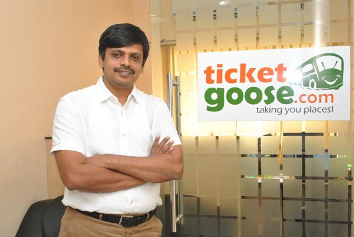

Our Birth:
Necessity is the mother of invention, though a very cliched phrase, is the most apt one to describe the birth of TicketGoose.com. One Co-Founder's frustration, of having to travel 30 kilometres from his native village to the nearest town just to book a bus ticket, lead to the birth of TicketGoose. That single thought, to provide the best possible experience in bus ticket booking, is the driving force of TicketGoose.
Our Company:
Launched on 15th August, 2007, TicketGoose is today one of the leading bus ticket booking web portals of India. We serve to more than 3000 destinations pan India, aggregate 700+ bus operators with 10,000+ buses plying on 20,000+ routes. We reach customers not connected to the net through our extensive network of 6000+ agents. Through our Vahana software platform, we enable bus operators to seamlessly manage their operations.
Our Team:
We, at TicketGoose believe in aspiring together and achieving together. All our teams starting from Customer Support, Inventory, Technology, Operations, Marketing and Sales are focused on providing dedicated and relentless service to our customers. Leveraging the experience of our world class technology team on cutting edge technologies and we strive to create the best bus ticket booking experience for our customers.
Our X Factor:
Living up to our credo of striving to provide the best experience in bus ticket booking, TicketGoose today is the most user friendly bus ticket booking portal. We provide a very visual representation of all the decision making information like price, seat availability, boarding points, dropping points and a lot more there by aiding our customers to make informed decisions easier and faster. Our excellent customer support team is available to help our customers with any queries they have and any help they may need. We also provide optional comprehensive travel insurance for our esteemed customers.
Our Journey:
We are in the journey of creating the best experience in bus ticket booking. We believe this journey doesn't have an end. There are and will be many more challenges and opportunities for us to improve this experience. With our customers on our side, we stride confidently on this never ending journey.